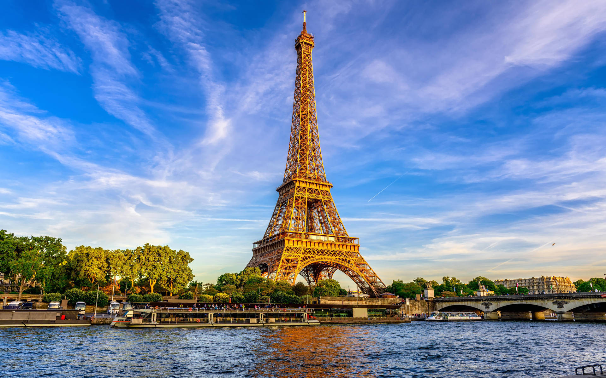

Descubra os Principais Pontos Turísticos do Mundo!
Explore as maravilhas que encantam milhões de visitantes ao redor do planeta.
Os 6 Principais Pontos Turísticos do Mundo

Torre Eiffel - Paris

Grande Muralha da China

Pirâmides do Egito

Estátua da Liberdade - EUA
Coliseu - Roma

Taj Mahal - Índia